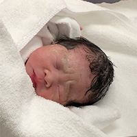

<!doctype html>
<html>
<meta name="viewport" content="device-width, initial-scale=1, user-scalable=no, maximum-scale=1.0, minimum-scale=1">

<head>
	<meta charset="utf-8">

	<!-- fabicon -->
	<link rel="shortcut icon" href="https://whutsup86.github.io/leesungho//favicon.ico" type="image/x-icon">
	<link rel="icon" href="https://whutsup86.github.io/leesungho//favicon.ico" type="image/x-icon">

	<link rel="stylesheet" href="https://cdnjs.cloudflare.com/ajax/libs/font-awesome/4.7.0/css/font-awesome.min.css">


	<link rel="stylesheet" href="style.css">

	<!-- image cycle -->
	<script src="http://ajax.googleapis.com/ajax/libs/jquery/1/jquery.min.js"></script>
	<script src="http://malsup.github.com/jquery.cycle2.js"></script>
	<!-- include one or more optional Cycle2 plugins -->
	<!-- include jQuery -->
	<script src="http://malsup.github.io/min/jquery.cycle2.video.min.js"></script>


</head>

<body>
<center>
	<h1>
		<br>
		<br>
		<br>
		<span style="background-color:white;">SUNG HO LEE</span>
	</h1>
	<p>
		<!-- show timer  -->

			<script type="text/javascript">
				var monthNames = ["Jan", "Feb", "Mar", "Apr", "May", "Jun",
					"Jul", "Aug", "Sep", "Oct", "Nov", "Dec"
				];
				var d = new Date();
				var nowHour = d.getHours();
				var nowMt = d.getMinutes();
				var c = 0;

				// Check AM, PM

				if (nowHour < 12 && nowHour >= 0) {

					c = 'AM';

				} else if (nowHour >= 12 && nowHour < 24) {

					c = 'PM';

				}
				document.write(d.getDate(), '/', monthNames[d.getMonth()], '/', d.getFullYear(), ' ', d.getHours(), ':', d.getMinutes(), ' ', c, '<br />');
			</script>

	</p>

	<br>
	<br>

	<details>
		<summary> CURRENT & UPCOMING </summary>

		<p>(1. Jun. 2020) Explore & define the next generation product innovations </P>
		<p>My focus is creating meaningful solutions that makes the benefits of technology accessible to the everyday person </P>
		<!--  -->
		<br>

	</details>
	<br>
	<details>
		<summary> <a href="WORKS.html">WORKS</a> </summary>
	</details>
	<br>

	<details>
		<summary> EXPERIENCE </summary>
		<p> <span style="font-weight:bold;">Product Planner</span>, Rakuten Mobile, IoT Business & Product Design <br><span style="font-style:italic; color:grey">Dec 2019 - Present, Tokyo, Japan</span> </p>
		<p> <span style="font-weight:bold;">Summer Internship</span>, Hyundai Motor Company, Tune!t, Start-up in House <br><span style="font-style:italic; color:grey"> Jul 2018 - Sep 2018, Uiwang, Korea</span> </p>
		<p> <span style="font-weight:bold;">Research Engineer</span>, Samsung Electronics, Home Appliance, Advanced R&D <br><span style="font-style:italic; color:grey"> Jul 2012 - Jan 2016, Suwon, Korea</span> </p>
		<p> <span style="font-weight:bold;">Internship</span>, Samsung Electronics, Home Appliance, Advanced R&D <br><span style="font-style:italic; color:grey"> Mar 2011 - Jun 2011, Suwon, Korea</span> </p>
		<p> <span style="font-weight:bold;">Internship</span>, Hyundai Heavy Industries Co.Ltd <br><span style="font-style:italic; color:grey"> Sep 2010 - Dec 2010, Ras Laffan, Qatar</span> </p>
	</details>

	<br>

	<details>
		<summary> EDUCATION </summary>
		<p> <span style="font-weight:bold;">MS, Design Engineering, UNIST,</span> <a href="http://decs.unist.ac.kr">DECS Lab</a> <br><span style="font-style:italic; color:grey">Jul 2017 - Sep 2019, Ulsan, Korea </span> </p>
		<p> <span style="font-weight:bold;">BA, Mechanical Engineering, Chung Ang Univ.</span> <br><span style="font-style:italic; color:grey">Mar 2006 - Jul 2012, Seoul, Korea </span> </p>
	</details>

	<br>

	<details>
		<summary> PUBLICATION </summary>
		<p> - LEE, Sung Ho, et al. LUNE: Representing Lunar Day by Displayed Lighting Object. In: CHI Extended Abstracts. 2019</p>
		<p> - S.H.Lee, Hui Sung Lee, "A Remote Controllable Safety Triangle ," 2018 KSDS Fall International Conference, pp. 152~153, 2018.</p>
	</details>
	<br>
	<details>
		<summary> PATENT </summary>
		<p> - Autonomous driving safety triangle prevent from additional accidents, KR10190042413,(2019.04.11)</p>
		<p> - PERSONAL MOBILITY AND CONTROLING METHOD, KR1019599420000,(2019.03.13)</p>
		<p> - PORTABLE CLOTHES DRYER, KR1020190019072,(2019.02.19)</p>
	</details>
	<br>
	<details>
		<summary> SKILLS </summary>
		<p> <span style="font-weight:bold;">Embedded System:</span> <br>
			MBED, PCB Design, C+,C++, etc.</p>
		<p> <span style="font-weight:bold;">Fabrication: </span> <br>
			3D Printing, CNC, Laser Cutting, etc.</p>
		<p> <span style="font-weight:bold;">Software:</span> <br>
			NX, Pro-e, SolidWorks, Matlab, Photoshop, Illustrator, InDesign, etc.</p>
	</details>
	<br>
	<details>
		<summary>
			OTHER ACTIVITY
		</summary>
		<p> <span style="font-weight:bold;"><a href="Motorcycle.html">Motorcycle Touring</a></span> <br>
			2000km(from Simonoseki to Tokyo), <span style="font-style:italic; color:grey">Mar - Apr 2017, Japan</span> </p>
		<p> <span style="font-weight:bold;">Completed Football Referee Courses</span> <br>
			Level 3 issued by Korea Football Association(available for official mini soccer game), <span style="font-style:italic; color:grey">Aug 2010</span> </p>
		<p> <span style="font-weight:bold;">Mandatory Military Service</span><br>
			Incheon, South Korea, <span style="font-style:italic; color:grey">Feb 2007 - Feb 2009</span> </p>
	</details>

	<br><br><br>

	<p3>
		<a href="mailto:leeeeeeesungho@gmail.com" class="fa fa-google"></a>
		<a href="https://www.linkedin.com/feed/" class="fa fa-linkedin"></a>
		<a href="https://www.instagram.com/lesungho/" class="fa fa-instagram"></a>

		<br><br><br>
		© Copyright 2020 Sung Ho Lee </p3>
</center>
</body>


</html>
